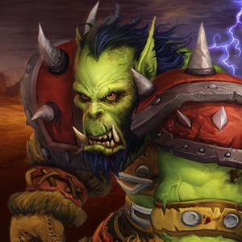

World of Warcraft
World of Warcraft: Shadowlands es la octava expansión del videojuego de rol multijugador masivo en línea (MMORPG) World of Warcraft, siguiendo a los acontecimientos de World of Warcraft: Battle for Azeroth. Fue anunciada el 1 de noviembre de 2019 en la BlizzCon. Su lanzamiento se ha retrasado del 27 de octubre de 2020 al 23 de noviembre de 2020.
Los acontecimientos de Shadowlands tienen lugar en las Tierras Sombrías, donde caen las
almas de
los
muertos.
Se afirma que se introducirá un nuevo sistema de desarrollo para los personajes en la
expansión,
el
nivel máximo se reducirá del 120 al 25,
por lo que la expansión transcurrirá entre los niveles 25 y 60. Los representantes de todas
las
razas tendrán una clase de caballero de la muerte disponible,
y al comienzo de la expansión se agregarán 5 nuevas zonas ubicadas en las Tierras Sombrías
del
mundo
del videojuego.
Tierras

Sombrías
Clases


Los Death Knight se enfrentan a sus enemigos de cerca,
complementando
los movimientos de sus armas con magia oscura que vuelve vulnerables a los enemigos o los
daña
con poder impío.
Arrastran a los enemigos a conflictos uno a uno, lo que los obliga a enfocar sus ataques
lejos
de los compañeros más débiles. Para evitar que sus enemigos huyan de su alcance,
los caballeros de la muerte deben ser conscientes del poder que invocan de las runas y
controlar
el ritmo de sus ataques de manera adecuada.
Al renunciar a las armaduras pesadas, los Demon Hunters
aprovechan
la velocidad, cerrando la distancia rápidamente para atacar a los enemigos con armas de una
mano.
Sin embargo, Illidari también debe usar su agilidad a la defensiva para asegurarse de que
las
batallas terminen favorablemente
Los druids aprovechan los vastos poderes de la naturaleza para
preservar el equilibrio y proteger la vida. Con experiencia, los druidas pueden desatar la
energía bruta de la naturaleza contra sus enemigos,
haciendo llover furia celestial sobre ellos desde una gran distancia, atándolos con
enredaderas
encantadas o atrapándolos en ciclones implacables.
Desde una edad temprana, la llamada de la naturaleza atrae a algunos aventureros desde la
comodidad de sus hogares al implacable mundo primigenio exterior. Los que aguantan se
convierten
en Hunters. Maestros de su entorno,
son capaces de deslizarse como fantasmas a través de los árboles y poner trampas en los
caminos
de sus enemigos.
Los estudiantes dotados de un intelecto agudo y una disciplina inquebrantable pueden seguir
el
camino del mago. La magia arcana disponible para los magos es grande y peligrosa y, por lo
tanto, solo se revela a los practicantes más devotos. Para evitar interferencias con su
lanzamiento de hechizos,
los Mages solo usan armaduras de tela, pero los escudos arcanos
y
los encantamientos les brindan protección adicional. Para mantener a raya a los enemigos,
los magos pueden convocar ráfagas de fuego para incinerar objetivos distantes y hacer que
estallen áreas enteras, incendiando grupos de enemigos.
Cuando los pandaren fueron subyugados por los mogu hace siglos, fueron los Monks los que llevaron la esperanza a un futuro aparentemente
oscuro. Restringidos de usar armas por sus amos esclavos,
estos pandaren en cambio se enfocaron en aprovechar su chi y aprender el combate sin armas.
Cuando surgió la oportunidad de la revolución, estaban bien entrenados para deshacerse del
yugo
de la opresión.
Este es el llamado del Paladin proteger a los débiles, hacer
justicia a los injustos y vencer el mal de los rincones más oscuros del mundo.
Estos guerreros santos están equipados con armaduras de placas para que puedan enfrentarse a
los
enemigos más duros, y la bendición de la Luz les permite curar heridas y, en algunos casos,
incluso devolver la vida a los muertos.
Los Priest se dedican a lo espiritual y expresan su fe
inquebrantable al servir a la gente. Durante milenios han dejado atrás los confines de sus
templos y la comodidad de sus santuarios para poder apoyar
a sus aliados en tierras devastadas por la guerra. En medio de un terrible conflicto, ningún
héroe cuestiona el valor de las órdenes sacerdotales.
Para los Rogues, el único código es el contrato, y su honor se
compra en oro. Libres de las limitaciones de la conciencia, estos mercenarios se basan en
tácticas brutales y eficientes. Asesinos letales y maestros del sigilo,
se acercarán a sus marcas por detrás, perforarán un órgano vital y desaparecerán en las
sombras
antes de que la víctima golpee el suelo.
Los Shaman son guías espirituales y practicantes, no de lo divino,
sino de los mismos elementos. A diferencia de otros místicos, los chamanes comulgan con
fuerzas
que no son estrictamente benévolas. Los elementos son caóticos y, abandonados a su suerte,
se
enfurecen unos contra otros con una furia primaria sin fin. Es el llamado del chamán para
equilibrar este caos.
Actuando como moderadores entre la tierra, el fuego, el agua y el aire, los chamanes invocan
tótems que enfocan los elementos para apoyar a los aliados del chamán o castigar a quienes
los
amenazan.
Frente al poder demoníaco, la mayoría de los héroes ven la muerte. Los Warlock solo ven oportunidades. El dominio es su objetivo, y han
encontrado un camino hacia él en las artes oscuras. Estos voraces lanzadores de conjuros
convocan a esbirros demoníacos para que luchen junto a ellos. Al principio, solo comandan el
servicio de diablillos, pero a medida que aumenta el conocimiento de un brujo,
súcubos seductores, leales abisarios y horribles cazadores viles se unen a las filas de los
hechiceros oscuros para causar estragos en cualquiera que se interponga en el camino de su
maestro.
Durante el tiempo que ha durado la guerra, los héroes de todas las razas han tenido como
objetivo dominar el arte de la batalla. Los Warriors combinan
fuerza, liderazgo y un vasto conocimiento de armas y armaduras para causar estragos en
gloriosos
combates. Algunos protegen de las líneas del frente con escudos,
bloqueando a los enemigos mientras los aliados apoyan al guerrero desde atrás con hechizos y
reverencias. Otros renuncian al escudo y desatan su rabia ante la amenaza más cercana con
una
variedad de armas mortales.
Facciones

Por la Horda
La indomable Horda cree en la unidad. Cuenta con fervientes guardianes de la libertad y la esperanza que se oponen firmemente a cualquiera que amenace estos ideales, incluida la estricta Alianza.

Orco
Troll

Blood Elf
Tauren
Goblin
Undead

Por la Alianza
La firme Alianza cree en la tradición. Cuenta con defensores acérrimos de la justicia y el deber que protegen el reino de Azeroth contra cualquier agresor, incluida la salvaje Horda.Humano
Enano
Gnomo
Draenei
Huargen
Nitgh Elf